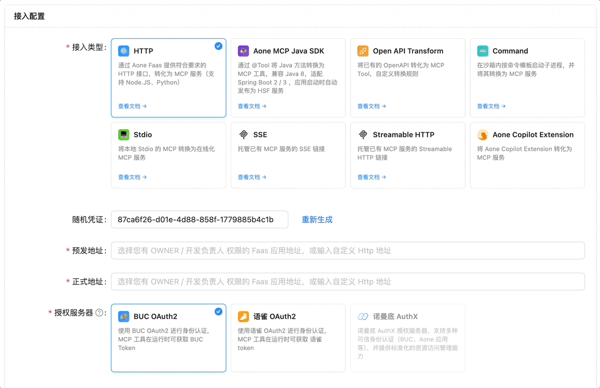

在沙箱中运行 Command
简介
Aone MCP 网关支持在远程沙箱中运行命令。通过该能力，开发者可以将 Stdio 类型的 MCP Server（一般通过 npx 或 uvx 命令启动）"转换" 为在线的 MCP Server。客户端可以通过 Streamable HTTP Transport（或 SSE Transport）连接这些 Server，不再依赖本地 Node.js/Python 环境。
（对实现细节感兴趣的同学可以看该文档）
注册与配置流程
注册 MCP Server
打开 MCP Server 注册页面，接入类型选择 Command，然后提交表单：
导入 mcp.json
新增 MCP Server 时，你可以支持导入已有 mcp.json，一键转换开源 MCP Server

配置命令行参数
注册 MCP Server 后，前往 "设置" — "选项"，填写 command.template 等配置：
command.template
定义 MCP Server 的命令行模板，模板采用自定义 DSL 设计，使用 Mug dot parse 进行解析，提供更直观的命令行配置方式。
模板支持以下语法：
- 变量（花括号）：
{name} - 可选块（方括号）：
[--flag]或[-f]或[--flag={value}]
在连接 MCP Server 时，用户可通过 URL 传递参数。MCP 网关会根据参数值，将变量与可选块替换为相应内容，"渲染" 得到完整命令。
下面以 npx package@{version} --arg={arg} [--flag] [--optional={optional}] 举一些例子：
| 链接地址（通过 URL 传递参数） | 展开后的命令 |
|---|---|
?version=latest&arg=foo | npx package@latest --arg=foo |
?version=latest&arg=foo&flag=true | npx package@latest --arg=foo --flag |
?version=latest&arg=foo&optional=bar | npx package@latest --arg=foo --optional=bar |
?version=latest | ERROR：缺少 arg 参数 |
在连接 MCP Server 时，用户也可以通过 MCP-ARGS 请求头来传递参数，具体规则参考下方「使用流程」章节。
command.args.<arg>
你可以通过 command.args.<arg>.xxx 来定义参数的规则，当前支持以下配置项：
command.args.<arg>.default-value参数默认值command.args.<arg>.description参数描述command.args.<arg>.value参数的固定值
参数规则：优先级
value > input > default-value
"固定值" 大于 "用户通过 URL 输入的参数值" 大于 "默认值"
参数规则：默认值
- 使用
{name}定义的变量默认必填；可选块中的变量默认可选 - 设置 value 或 default-value 后，该参数变为可选参数
- 注意：目前我们要求所有参数都必须提供固定值或默认值（因为开放平台上 MCP 发布流程需要用默认参数值来获取工具列表）
配置环境变量
你可以通过 command.env.<env> 来定义命令的环境变量，当前支持以下配置项：
command.env.<env>.description环境变量描述command.env.<env>.defaultValue环境变量默认值command.env.<env>.required是否为必传的环境变量command.env.<env>.value环境变量的固定值
上下文变量
通过 $ctx.xxx 的语法获取 MCP 会话 ID 与当前用户信息（BUC 工号）等。
command 类型支持使用 "上下文变量" 来定义 arg 或 env 的值。当前支持以下用法：
$ctx.user.empId用户工号$ctx.user.name用户花名（没有花名时，该字段为姓名）$ctx.user.loginName用户域账号$ctx.sessionKeyMCP 会话 ID
正确示例：
command.template=npx package@{version} --empId={empId} --logDir=/logs/{sessionkey}/stdout.log # empId 将在运行时被替换为 BUC 用户工号 command.args.empId.value=$ctx.user.empId # sessionKey 将在运行时被替换为 MCP 会话 ID command.args.sessionkey.value=$ctx.sessionKey # 子进程可通过 MCP_SESSION_KEY 环境变量获取 MCP 会话 ID command.env.MCP_SESSION_KEY.value=$ctx.sessionKey
错误示例：
command.template=npx package --empId=$ctx.user.empId- 错误用法：上下文变量不能放在 template 中
进阶配置
command.sandbox-reuse-strategy沙箱复用策略"user"同一个用户复用沙箱（默认值） — 该模式下，同一个用户多次连接同一个 MCP Server，会复用同一个沙箱"shared"共享模式 — 所有用户连接同一个 MCP Server，都会复用同一个沙箱"exclusive"独占策略 — 不进行任何复用，每个 MCP 会话使用单独的沙箱实例
command.max-active-sessions-per-sandbox单个沙箱中可同时运行的子进程数量上限，默认为 32command.sandbox-max-reuse-uptime沙箱容器最大可复用运行时长，默认为 3 天
调试与运维
详见：调试与运维
使用流程
在使用阶段，如果 Command 模板包含参数或环境变量，用户可以通过 URL 参数或 HTTP 请求头提供这些参数/变量值。规则如下：
- 链接参数映射规则
?version=latest&flag=true链接参数会自动映射为变量值?env.TOKEN=xxx链接中以env.开头的参数会映射为环境变量
- 请求头参数映射规则（使用 JSON 格式）
MCP-ARGS: {"version":"1.0.0","flag": true}MCP-ENV: {"TOKEN":"xxx"}
此外，MCP 网关也会对连接进行身份认证，详见 认证与授权文档。
示例
示例：高德地图 MCP
command.template=tnpx @amap/amap-maps-mcp-server@{version} command.args.version.default-value=0.0.8 command.env.AMAP_MAPS_API_KEY.description=高德官网上申请的key
使用示例：
- 通过 URL 提供环境变量：
https://mcp.alibaba-inc.com/amap-mcp/mcp?env.AMAP_MAPS_API_KEY=xxx - 通过请求头提供环境变量：
https://mcp.alibaba-inc.com/amap-mcp/mcpMCP-ENV: {"AMAP_MAPS_API_KEY": "xxx"}PRIVATE-TOKEN: *******— Private Token 从 此页面获取
示例：Context7
command.template=tnpx @upstash/context7-mcp@{version} command.args.version.default-value=2.0.2 command.schedule-strategy=shared
使用示例：
- 使用默认版本：
https://mcp.alibaba-inc.com/context7/mcp - 使用其他版本：
https://mcp.alibaba-inc.com/context7/mcp?version=2.1.0
示例：alibabacloud-dms-mcp-server（uvx）
command.template=uvx alibabacloud-dms-mcp-server@0.1.16 command.env.ALIBABA_CLOUD_ACCESS_KEY_ID.description=Access Key ID command.env.ALIBABA_CLOUD_ACCESS_KEY_SECRET.description=Access Key Secret command.env.CONNECTION_STRING.description=指定需要访问的数据库，格式为 dbName@host:port
示例：Mermaid MCP
command.template=tnpx mcp-mermaid@{version} command.args.version.value=0.4.0
使用示例：https://mcp.alibaba-inc.com/mermaid/mcp
注意，version 参数配置了固定值，使用时无法修改该参数。
示例：chrome-devtools-mcp
command.template=npx --verbose --registry={registry} chrome-devtools-mcp@{version} --executablePath={executablePath} --isolated --headless --chrome-arg=--disable-setuid-sandbox --chrome-arg=--no-sandbox --logFile={logFile} command.args.version.value=0.10.2 command.args.registry.value=https://registry.anpm.alibaba-inc.com command.args.executablePath.value=/root/.cache/ms-playwright/chromium-1200/chrome-linux64/chrome command.args.logFile.value=/tmp/cdlog.txt
小提示：通过 {executablePath}、{logFile} 等变量，简化 template，提升 template 的可读性